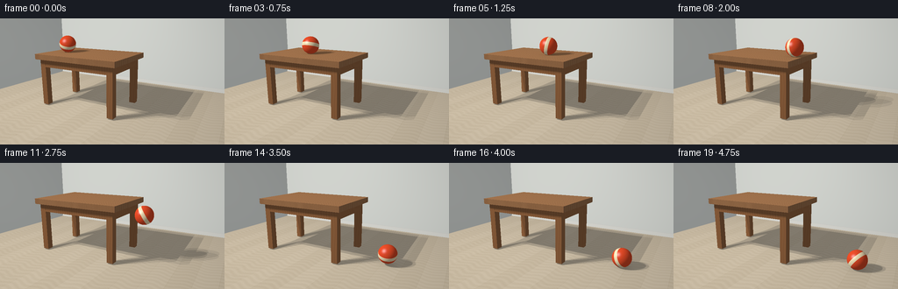
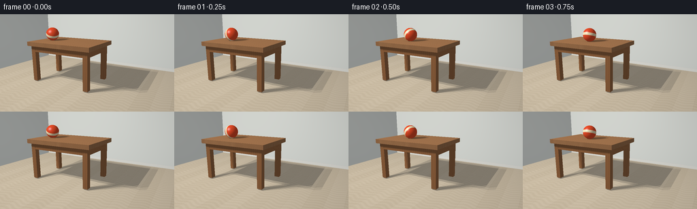

CODING AGENTS AS PIXEL WORLD MODELS
traex/GPT-6.1-Sol · instance_preservation_0019
点击播放 · 原生 RGB 像素
逐轮保存的候选
回放视频、检查图与代码变化。
每份候选均可单独播放。实际图片检查记录在下方工具轨迹中。
候选 01播放与检查图
点击播放 · 原生 RGB 像素

展开代码变化
--- 上一保存版本
+++ 本次保存版本
@@ -0,0 +1,211 @@
+"""Deterministic supersampled mathematical RGB rendering; no external assets."""
+from pathlib import Path
+import json
+import numpy as np
+from PIL import Image
+import artifact_io
+
+ROOT = Path(__file__).resolve().parent
+SPEC = json.loads((ROOT/'task_spec.json').read_text())
+W,H = SPEC['width'],SPEC['height']
+SS=3
+w,h=W*SS,H*SS
+CAM=np.array([3.1,2.65,5.8],np.float32)
+TARGET=np.array([-.15,.85,0],np.float32)
+forward=TARGET-CAM; forward/=np.linalg.norm(forward)
+right=np.cross(forward,[0,1,0]); right/=np.linalg.norm(right)
+up=np.cross(right,forward)
+y,x=np.mgrid[0:h,0:w]
+D=forward+((x+.5-w/2)/(260*SS))[...,None]*right-((y+.5-h/2)/(260*SS))[...,None]*up
+D=D.astype(np.float32); D/=np.linalg.norm(D,axis=-1,keepdims=True)
+O=np.broadcast_to(CAM,D.shape)
+# slab, four legs, and the recessed supporting apron
+boxes=[]
+def box(lo,hi,kind): boxes.append((np.array(lo,np.float32),np.array(hi,np.float32),kind))
+box([-2.3,1.49,-.95],[.45,1.65,.95],'top')
+for xx in [-2.12,.23]:
+ for zz in [-.73,.73]:
+ box([xx-.095,.035,zz-.095],[xx+.095,1.50,zz+.095],'leg')
+box([-2.18,1.25,.72],[.32,1.49,.82],'apron')
+box([-2.18,1.25,-.82],[.32,1.49,-.72],'apron')
+box([.22,1.25,-.73],[.32,1.49,.73],'apron')
+box([-2.18,1.25,-.73],[-2.08,1.49,.73],'apron')
+box([-6,0,-3.37],[6,.14,-3.28],'baseboard')
+
+def box_hit(origin,direction,lo,hi):
+ inv=1/np.where(np.abs(direction)<1e-9,1e-9,direction)
+ a=(lo-origin)*inv; b=(hi-origin)*inv
+ near=np.minimum(a,b); far=np.maximum(a,b)
+ tn=np.max(near,axis=-1); tf=np.min(far,axis=-1)
+ t=np.where((tf>=np.maximum(tn,0))&(tn>1e-4),tn,np.inf)
+ return t, np.argmax(near,axis=-1)
+
+def sphere_hit(origin,direction,center,radius):
+ q=origin-center
+ b=np.sum(q*direction,axis=-1); c=np.sum(q*q,axis=-1)-radius*radius
+ disc=b*b-c
+ root=np.sqrt(np.maximum(disc,0))
+ t=-b-root
+ return np.where((disc>=0)&(t>1e-4),t,np.inf)
+
+# Calculate stationary scene once.
+t=np.full((h,w),np.inf,np.float32)
+normal=np.zeros_like(D); mat=np.zeros((h,w),np.int32)
+for axis,value,mid,sgn in [(1,0,1,1),(2,-3.4,2,1),(0,-5.0,2,1)]:
+ tp=(value-CAM[axis])/D[...,axis]
+ hit=(tp>0)&(tp<t)
+ t[hit]=tp[hit];normal[hit]=0;normal[...,axis][hit]=sgn;mat[hit]=mid
+for i,(lo,hi,kind) in enumerate(boxes):
+ tb,axis=box_hit(O,D,lo,hi);hit=tb<t
+ t[hit]=tb[hit];normal[hit]=0
+ for ax in range(3):
+ sel=hit&(axis==ax);normal[...,ax][sel]=-np.sign(D[...,ax][sel])
+ mat[hit]=i+3
+P=O+D*t[...,None]
+base=np.zeros_like(P)
+rough=np.full((h,w),.7,np.float32)
+# Light limestone-colored floor with long, understated oak boards.
+sel=mat==1
+px,py,pz=P[...,0],P[...,1],P[...,2]
+board=np.floor((px+5)/.53)
+wave=np.sin(pz*37 + 2*np.sin(px*9) + 0.4*np.sin(pz*7))
+grain=np.sin(pz*142+np.sin(px*44)+wave*2)
+variation=.018*wave+.006*grain+.012*np.sin(board*3.714)
+wood=np.array([.57,.50,.39])+variation[...,None]
+edge=(np.mod(px+5,.53)<.006)
+ends=np.mod(pz+board*.79,2.45)<.008
+wood-=(edge|ends)[...,None]*.055
+base[sel]=wood[sel]
+base[mat==2]=[.64,.68,.68]
+for i,(lo,hi,kind) in enumerate(boxes):
+ sel=mat==i+3
+ if kind=='baseboard':
+ base[sel]=[.69,.71,.70]
+ continue
+ # Procedural elongated flowing grain runs along the tabletop's length.
+ if kind=='top':
+ phase=pz*54+1.3*np.sin(px*2.5+pz*5)+.6*np.sin(px*7+pz*3)
+ v=.023*np.sin(phase)+.012*np.sin(phase*3.7)+.005*np.sin(px*103+pz*373)
+ plank=np.floor((pz+.95)/.38)
+ v+=.014*np.sin(plank*6.1+1)
+ v-=.04*(np.mod(pz+.95,.38)<.006)
+ col=np.array([.37,.18,.078])+v[...,None]*np.array([1,.62,.3])
+ # Slab edge slightly darker than the polished horizontal surface.
+ col*=np.where(normal[...,1]>.5,1,.86)[...,None]
+ else:
+ phase=px*75+pz*97+np.sin(py*5)*1.4
+ v=.012*np.sin(phase)+.009*np.sin(phase*3)
+ col=np.array([.29,.125,.047])+v[...,None]*np.array([1,.6,.25])
+ base[sel]=col[sel]
+ rough[sel]=.39
+
+LIGHT=np.array([-3.5,6.0,4.5],np.float32)
+lightpoints=[LIGHT+np.array(o,np.float32) for o in [(-.48,0,-.35),(.48,0,-.35),(-.48,0,.35),(.48,0,.35)]]
+view=-D
+static_vis=[]; lightdirs=[]; cosines=[]; highlights=[]
+origin=P+normal*.004
+for light in lightpoints:
+ L=light-P; dist=np.linalg.norm(L,axis=-1); L/=dist[...,None]
+ occ=np.zeros((h,w),bool)
+ for lo,hi,kind in boxes:
+ tb,_=box_hit(origin,L,lo,hi);occ|=tb<dist
+ static_vis.append((~occ).astype(np.float32))
+ lightdirs.append(L)
+ cosines.append(np.maximum(np.sum(normal*L,axis=-1),0))
+ half=L+view;half/=np.linalg.norm(half,axis=-1,keepdims=True)
+ highlights.append(np.maximum(np.sum(normal*half,axis=-1),0)**(20+70*(1-rough)))
+
+R=.26
+EDGE=.45
+V=.95
+T_EDGE=(EDGE+1.70)/V
+G=5.0
+YTOP=1.65+R
+TFALL=np.sqrt(2*1.65/G)
+T_IMPACT=T_EDGE+TFALL
+RESTITUTION=.29
+
+def motion(time):
+ if time<=T_EDGE:
+ xx=-1.7+V*time; yy=YTOP
+ elif time<=T_IMPACT:
+ q=time-T_EDGE;xx=EDGE+V*q;yy=YTOP-.5*G*q*q
+ else:
+ q=time-T_IMPACT
+ impact_x=EDGE+V*TFALL
+ # Dissipation after contact: a low bounce followed by a second tiny hop.
+ bounce_v=G*TFALL*RESTITUTION
+ dur=2*bounce_v/G
+ if q<dur: yy=R+bounce_v*q-.5*G*q*q
+ elif q<dur+dur*RESTITUTION:
+ q2=q-dur;bv=bounce_v*RESTITUTION;yy=R+bv*q2-.5*G*q2*q2
+ else: yy=R
+ xx=impact_x+.69*q-.12*q*q
+ return np.array([xx,yy,.12],np.float32)
+
+def render(time):
+ center=motion(time)
+ # A broad key light provides stable soft shadows on tabletop and floor.
+ illum=np.zeros((h,w),np.float32); spec=np.zeros_like(illum)
+ for j,light in enumerate(lightpoints):
+ ballshadow=sphere_hit(origin,lightdirs[j],center,R)
+ visibility=static_vis[j]*(~np.isfinite(ballshadow))
+ illum+=cosines[j]*visibility*.25
+ spec+=highlights[j]*visibility*.25
+ # Hemispheric ambient and modest ground contact occlusion.
+ ambient=.30+.09*np.maximum(normal[...,1],0)
+ # The bounce/rolling contact shadow is soft, narrow, and located on the receiving surface.
+ top=(mat==3)&(normal[...,1]>.5)
+ floor=(mat==1)
+ height=np.where(top,center[1]-YTOP,center[1]-R)
+ horizontal=(px-center[0])**2+(pz-center[2])**2
+ ao=np.exp(-horizontal/(.055+.065*np.maximum(height,0)))*np.exp(-np.maximum(height,0)*3)
+ ambient*=1-.28*ao*(top|floor)
+ rgb=base*(ambient[...,None]+.79*illum[...,None]*np.array([1.05,1,.92]))
+ rgb+=spec[...,None]*.045
+ # Render rotating orange rubber sphere with wide cream bands and fine panel seams.
+ st=sphere_hit(O,D,center,R)
+ hit=st<t
+ sp=O+D*np.where(hit,st,0)[...,None]
+ sn=(sp-center)/R
+ angle=-(center[0]+1.7)/R
+ ca,sa=np.cos(angle),np.sin(angle)
+ local=sn.copy()
+ local[...,0]=ca*sn[...,0]+sa*sn[...,1]
+ local[...,1]=-sa*sn[...,0]+ca*sn[...,1]
+ # Axis tilt makes the marking travel distinctly across the sphere as it rolls.
+ band_axis=np.array([.35,.89,.29]);band_axis/=np.linalg.norm(band_axis)
+ band=np.abs(np.sum(local*band_axis,axis=-1))
+ cream=np.clip((.205-band)/.018,0,1)
+ scol=np.zeros_like(P)+[.80,.072,.018]
+ scol=scol*(1-cream[...,None])+np.array([.91,.80,.54])*cream[...,None]
+ seam=np.exp(-(local[...,2]/.016)**2)
+ seam+=np.exp(-(local[...,0]/.014)**2)*.5
+ scol*=1-.19*np.minimum(seam,1)[...,None]
+ # Microtexture, below pixel size, adds a matte rubber response rather than a flat disk.
+ tex=.005*np.sin(local[...,0]*410)*np.sin(local[...,1]*370)
+ scol+=tex[...,None]
+ diffuse=np.zeros((h,w),np.float32);shine=np.zeros_like(diffuse)
+ for light in lightpoints:
+ lv=light-sp;lv/=np.linalg.norm(lv,axis=-1,keepdims=True)
+ df=np.maximum(np.sum(sn*lv,axis=-1),0)
+ hv=lv+view;hv/=np.linalg.norm(hv,axis=-1,keepdims=True)
+ hs=np.maximum(np.sum(sn*hv,axis=-1),0)
+ diffuse+=df*.25
+ shine+=hs**55*.25
+ srgb=scol*(.26+.86*diffuse[...,None])*np.array([1.04,1,.95])
+ srgb+=shine[...,None]*.37
+ rgb[hit]=srgb[hit]
+ # A restrained photographic grade and gamma conversion.
+ rgb=np.clip(rgb,0,1)
+ rgb=np.power(rgb,1/2.2)
+ # Gentle lens vignette keeps attention on the action without moving the camera.
+ vignette=1-.075*((x-w*.5)**2/(w*.7)**2+(y-h*.5)**2/(h*.8)**2)
+ rgb*=vignette[...,None]
+ arr=np.uint8(np.clip(rgb*255+.5,0,255))
+ return np.array(Image.fromarray(arr).resize((W,H),Image.Resampling.LANCZOS))
+
+if __name__=='__main__':
+ frames=np.stack([render(i/SPEC['fps']) for i in range(SPEC['frames'])])
+ artifact_io.save(frames,ROOT)
+ print('Saved', frames.shape)
候选 02播放与检查图
点击播放 · 原生 RGB 像素

展开代码变化
--- 上一保存版本 +++ 本次保存版本 @@ -70,7 +70,7 @@ board=np.floor((px+5)/.53) wave=np.sin(pz*37 + 2*np.sin(px*9) + 0.4*np.sin(pz*7)) grain=np.sin(pz*142+np.sin(px*44)+wave*2) -variation=.018*wave+.006*grain+.012*np.sin(board*3.714) +variation=.009*wave+.003*grain+.012*np.sin(board*3.714) wood=np.array([.57,.50,.39])+variation[...,None] edge=(np.mod(px+5,.53)<.006) ends=np.mod(pz+board*.79,2.45)<.008 @@ -100,7 +100,12 @@ rough[sel]=.39 LIGHT=np.array([-3.5,6.0,4.5],np.float32) -lightpoints=[LIGHT+np.array(o,np.float32) for o in [(-.48,0,-.35),(.48,0,-.35),(-.48,0,.35),(.48,0,.35)]] +lightpoints=[] +for i in range(16): + a=i*2.399963229728653 + rad=np.sqrt((i+.5)/16) + lightpoints.append(LIGHT+np.array([.65*rad*np.cos(a),0,.48*rad*np.sin(a)],np.float32)) +LIGHT_WEIGHT=1/len(lightpoints) view=-D static_vis=[]; lightdirs=[]; cosines=[]; highlights=[] origin=P+normal*.004 @@ -150,8 +155,8 @@ for j,light in enumerate(lightpoints): ballshadow=sphere_hit(origin,lightdirs[j],center,R) visibility=static_vis[j]*(~np.isfinite(ballshadow)) - illum+=cosines[j]*visibility*.25 - spec+=highlights[j]*visibility*.25 + illum+=cosines[j]*visibility*LIGHT_WEIGHT + spec+=highlights[j]*visibility*LIGHT_WEIGHT # Hemispheric ambient and modest ground contact occlusion. ambient=.30+.09*np.maximum(normal[...,1],0) # The bounce/rolling contact shadow is soft, narrow, and located on the receiving surface. @@ -191,8 +196,8 @@ df=np.maximum(np.sum(sn*lv,axis=-1),0) hv=lv+view;hv/=np.linalg.norm(hv,axis=-1,keepdims=True) hs=np.maximum(np.sum(sn*hv,axis=-1),0) - diffuse+=df*.25 - shine+=hs**55*.25 + diffuse+=df*LIGHT_WEIGHT + shine+=np.clip(hs,0,1)**55*LIGHT_WEIGHT srgb=scol*(.26+.86*diffuse[...,None])*np.array([1.04,1,.95]) srgb+=shine[...,None]*.37 rgb[hit]=srgb[hit]
候选 03播放与检查图
可观测工具轨迹
实际执行的命令与返回图片。
命令 1exit 0
/bin/bash -lc 'ls -la && cat prompt.txt && cat GENERATION_RULES.md && cat task_spec.json'
命令 2exit 0
/bin/bash -lc 'cat artifact_io.py'
命令 3exit 0
/bin/bash -lc "python - <<'PY' import numpy as np cam=np.array([3.1,2.65,5.8]); target=np.array([-.15,.85,0]); f=(target-cam); f/=np.linalg.norm(f); r=np.cross(f,[0,1,0]);r/=np.linalg.norm(r);u=np.cross(r,f) for pt in [[-2.1,1.64,0],[-1.7,1.92,.15],[.4,1.92,.15],[1.4,.28,.15],[-2.1,0,0],[.4,0,0],[.4,1.64,-.8],[.4,1.64,.8]]: p=np.array(pt)-cam; depth=p@f;print(pt, [128+(p@r)*260/depth,72-(p@u)*260/depth]) PY"
命令 4exit 0
/bin/bash -lc "cat > generate.py <<'PY'
\"\"\"Deterministic supersampled mathematical RGB rendering; no external assets.\"\"\"
from pathlib import Path
import json
import numpy as np
from PIL import Image
import artifact_io
ROOT = Path(__file__).resolve().parent
SPEC = json.loads((ROOT/'task_spec.json').read_text())
W,H = SPEC['width'],SPEC['height']
SS=3
w,h=W*SS,H*SS
CAM=np.array([3.1,2.65,5.8],np.float32)
TARGET=np.array([-.15,.85,0],np.float32)
forward=TARGET-CAM; forward/=np.linalg.norm(forward)
right=np.cross(forward,[0,1,0]); right/=np.linalg.norm(right)
up=np.cross(right,forward)
y,x=np.mgrid[0:h,0:w]
D=forward+((x+.5-w/2)/(260*SS))[...,None]*right-((y+.5-h/2)/(260*SS))[...,None]*up
D=D.astype(np.float32); D/=np.linalg.norm(D,axis=-1,keepdims=True)
O=np.broadcast_to(CAM,D.shape)
# slab, four legs, and the recessed supporting apron
boxes=[]
def box(lo,hi,kind): boxes.append((np.array(lo,np.float32),np.array(hi,np.float32),kind))
box([-2.3,1.49,-.95],[.45,1.65,.95],'top')
for xx in [-2.12,.23]:
for zz in [-.73,.73]:
box([xx-.095,.035,zz-.095],[xx+.095,1.50,zz+.095],'leg')
box([-2.18,1.25,.72],[.32,1.49,.82],'apron')
box([-2.18,1.25,-.82],[.32,1.49,-.72],'apron')
box([.22,1.25,-.73],[.32,1.49,.73],'apron')
box([-2.18,1.25,-.73],[-2.08,1.49,.73],'apron')
box([-6,0,-3.37],[6,.14,-3.28],'baseboard')
def box_hit(origin,direction,lo,hi):
inv=1/np.where(np.abs(direction)<1e-9,1e-9,direction)
a=(lo-origin)*inv; b=(hi-origin)*inv
near=np.minimum(a,b); far=np.maximum(a,b)
tn=np.max(near,axis=-1); tf=np.min(far,axis=-1)
t=np.where((tf>=np.maximum(tn,0))&(tn>1e-4),tn,np.inf)
return t, np.argmax(near,axis=-1)
def sphere_hit(origin,direction,center,radius):
q=origin-center
b=np.sum(q*direction,axis=-1); c=np.sum(q*q,axis=-1)-radius*radius
disc=b*b-c
root=np.sqrt(np.maximum(disc,0))
t=-b-root
return np.where((disc>=0)&(t>1e-4),t,np.inf)
# Calculate stationary scene once.
t=np.full((h,w),np.inf,np.float32)
normal=np.zeros_like(D); mat=np.zeros((h,w),np.int32)
for axis,value,mid,sgn in [(1,0,1,1),(2,-3.4,2,1),(0,-5.0,2,1)]:
tp=(value-CAM[axis])/D[...,axis]
hit=(tp>0)&(tp<t)
t[hit]=tp[hit];normal[hit]=0;normal[...,axis][hit]=sgn;mat[hit]=mid
for i,(lo,hi,kind) in enumerate(boxes):
tb,axis=box_hit(O,D,lo,hi);hit=tb<t
t[hit]=tb[hit];normal[hit]=0
for ax in range(3):
sel=hit&(axis==ax);normal[...,ax][sel]=-np.sign(D[...,ax][sel])
mat[hit]=i+3
P=O+D*t[...,None]
base=np.zeros_like(P)
rough=np.full((h,w),.7,np.float32)
# Light limestone-colored floor with long, understated oak boards.
sel=mat==1
px,py,pz=P[...,0],P[...,1],P[...,2]
board=np.floor((px+5)/.53)
wave=np.sin(pz*37 + 2*np.sin(px*9) + 0.4*np.sin(pz*7))
grain=np.sin(pz*142+np.sin(px*44)+wave*2)
variation=.018*wave+.006*grain+.012*np.sin(board*3.714)
wood=np.array([.57,.50,.39])+variation[...,None]
edge=(np.mod(px+5,.53)<.006)
ends=np.mod(pz+board*.79,2.45)<.008
wood-=(edge|ends)[...,None]*.055
base[sel]=wood[sel]
base[mat==2]=[.64,.68,.68]
for i,(lo,hi,kind) in enumerate(boxes):
sel=mat==i+3
if kind=='baseboard':
base[sel]=[.69,.71,.70]
continue
# Procedural elongated flowing grain runs along the tabletop's length.
if kind=='top':
phase=pz*54+1.3*np.sin(px*2.5+pz*5)+.6*np.sin(px*7+pz*3)
v=.023*np.sin(phase)+.012*np.sin(phase*3.7)+.005*np.sin(px*103+pz*373)
plank=np.floor((pz+.95)/.38)
v+=.014*np.sin(plank*6.1+1)
v-=.04*(np.mod(pz+.95,.38)<.006)
col=np.array([.37,.18,.078])+v[...,None]*np.array([1,.62,.3])
# Slab edge slightly darker than the polished horizontal surface.
col*=np.where(normal[...,1]>.5,1,.86)[...,None]
else:
phase=px*75+pz*97+np.sin(py*5)*1.4
v=.012*np.sin(phase)+.009*np.sin(phase*3)
col=np.array([.29,.125,.047])+v[...,None]*np.array([1,.6,.25])
base[sel]=col[sel]
rough[sel]=.39
LIGHT=np.array([-3.5,6.0,4.5],np.float32)
lightpoints=[LIGHT+np.array(o,np.float32) for o in [(-.48,0,-.35),(.48,0,-.35),(-.48,0,.35),(.48,0,.35)]]
view=-D
static_vis=[]; lightdirs=[]; cosines=[]; highlights=[]
origin=P+normal*.004
for light in lightpoints:
L=light-P; dist=np.linalg.norm(L,axis=-1); L/=dist[...,None]
occ=np.zeros((h,w),bool)
for lo,hi,kind in boxes:
tb,_=box_hit(origin,L,lo,hi);occ|=tb<dist
static_vis.append((~occ).astype(np.float32))
lightdirs.append(L)
cosines.append(np.maximum(np.sum(normal*L,axis=-1),0))
half=L+view;half/=np.linalg.norm(half,axis=-1,keepdims=True)
highlights.append(np.maximum(np.sum(normal*half,axis=-1),0)**(20+70*(1-rough)))
R=.26
EDGE=.45
V=.95
T_EDGE=(EDGE+1.70)/V
G=5.0
YTOP=1.65+R
TFALL=np.sqrt(2*1.65/G)
T_IMPACT=T_EDGE+TFALL
RESTITUTION=.29
def motion(time):
if time<=T_EDGE:
xx=-1.7+V*time; yy=YTOP
elif time<=T_IMPACT:
q=time-T_EDGE;xx=EDGE+V*q;yy=YTOP-.5*G*q*q
else:
q=time-T_IMPACT
impact_x=EDGE+V*TFALL
# Dissipation after contact: a low bounce followed by a second tiny hop.
bounce_v=G*TFALL*RESTITUTION
dur=2*bounce_v/G
if q<dur: yy=R+bounce_v*q-.5*G*q*q
elif q<dur+dur*RESTITUTION:
q2=q-dur;bv=bounce_v*RESTITUTION;yy=R+bv*q2-.5*G*q2*q2
else: yy=R
xx=impact_x+.69*q-.12*q*q
return np.array([xx,yy,.12],np.float32)
def render(time):
center=motion(time)
# A broad key light provides stable soft shadows on tabletop and floor.
illum=np.zeros((h,w),np.float32); spec=np.zeros_like(illum)
for j,light in enumerate(lightpoints):
ballshadow=sphere_hit(origin,lightdirs[j],center,R)
visibility=static_vis[j]*(~np.isfinite(ballshadow))
illum+=cosines[j]*visibility*.25
spec+=highlights[j]*visibility*.25
# Hemispheric ambient and modest ground contact occlusion.
ambient=.30+.09*np.maximum(normal[...,1],0)
# The bounce/rolling contact shadow is soft, narrow, and located on the receiving surface.
top=(mat==3)&(normal[...,1]>.5)
floor=(mat==1)
height=np.where(top,center[1]-YTOP,center[1]-R)
horizontal=(px-center[0])**2+(pz-center[2])**2
ao=np.exp(-horizontal/(.055+.065*np.maximum(height,0)))*np.exp(-np.maximum(height,0)*3)
ambient*=1-.28*ao*(top|floor)
rgb=base*(ambient[...,None]+.79*illum[...,None]*np.array([1.05,1,.92]))
rgb+=spec[...,None]*.045
# Render rotating orange rubber sphere with wide cream bands and fine panel seams.
st=sphere_hit(O,D,center,R)
hit=st<t
sp=O+D*np.where(hit,st,0)[...,None]
sn=(sp-center)/R
angle=-(center[0]+1.7)/R
ca,sa=np.cos(angle),np.sin(angle)
local=sn.copy()
local[...,0]=ca*sn[...,0]+sa*sn[...,1]
local[...,1]=-sa*sn[...,0]+ca*sn[...,1]
# Axis tilt makes the marking travel distinctly across the sphere as it rolls.
band_axis=np.array([.35,.89,.29]);band_axis/=np.linalg.norm(band_axis)
band=np.abs(np.sum(local*band_axis,axis=-1))
cream=np.clip((.205-band)/.018,0,1)
scol=np.zeros_like(P)+[.80,.072,.018]
scol=scol*(1-cream[...,None])+np.array([.91,.80,.54])*cream[...,None]
seam=np.exp(-(local[...,2]/.016)**2)
seam+=np.exp(-(local[...,0]/.014)**2)*.5
scol*=1-.19*np.minimum(seam,1)[...,None]
# Microtexture, below pixel size, adds a matte rubber response rather than a flat disk.
tex=.005*np.sin(local[...,0]*410)*np.sin(local[...,1]*370)
scol+=tex[...,None]
diffuse=np.zeros((h,w),np.float32);shine=np.zeros_like(diffuse)
for light in lightpoints:
lv=light-sp;lv/=np.linalg.norm(lv,axis=-1,keepdims=True)
df=np.maximum(np.sum(sn*lv,axis=-1),0)
hv=lv+view;hv/=np.linalg.norm(hv,axis=-1,keepdims=True)
hs=np.maximum(np.sum(sn*hv,axis=-1),0)
diffuse+=df*.25
shine+=hs**55*.25
srgb=scol*(.26+.86*diffuse[...,None])*np.array([1.04,1,.95])
srgb+=shine[...,None]*.37
rgb[hit]=srgb[hit]
# A restrained photographic grade and gamma conversion.
rgb=np.clip(rgb,0,1)
rgb=np.power(rgb,1/2.2)
# Gentle lens vignette keeps attention on the action without moving the camera.
vignette=1-.075*((x-w*.5)**2/(w*.7)**2+(y-h*.5)**2/(h*.8)**2)
rgb*=vignette[...,None]
arr=np.uint8(np.clip(rgb*255+.5,0,255))
return np.array(Image.fromarray(arr).resize((W,H),Image.Resampling.LANCZOS))
if __name__=='__main__':
frames=np.stack([render(i/SPEC['fps']) for i in range(SPEC['frames'])])
artifact_io.save(frames,ROOT)
print('Saved', frames.shape)
PY
python generate.py"命令 5exit 0
/bin/bash -lc "python - <<'PY'
p='generate.py'
s=open(p).read().replace('variation=.018*wave+.006*grain+.012*np.sin(board*3.714)','variation=.009*wave+.003*grain+.012*np.sin(board*3.714)')
s=s.replace(\"lightpoints=[LIGHT+np.array(o,np.float32) for o in [(-.48,0,-.35),(.48,0,-.35),(-.48,0,.35),(.48,0,.35)]]\", \"lightpoints=[]\\nfor i in range(16):\\n a=i*2.399963229728653\\n rad=np.sqrt((i+.5)/16)\\n lightpoints.append(LIGHT+np.array([.65*rad*np.cos(a),0,.48*rad*np.sin(a)],np.float32))\\nLIGHT_WEIGHT=1/len(lightpoints)\")
s=s.replace('cosines[j]*visibility*.25','cosines[j]*visibility*LIGHT_WEIGHT').replace('highlights[j]*visibility*.25','highlights[j]*visibility*LIGHT_WEIGHT').replace('diffuse+=df*.25','diffuse+=df*LIGHT_WEIGHT').replace('shine+=hs**55*.25','shine+=np.clip(hs,0,1)**55*LIGHT_WEIGHT')
open(p,'w').write(s)
PY
python generate.py"视觉工具实际返回图片 1

视觉工具实际返回图片 2

保存候选 3 份；完成命令 5 次；可验证图片返回 2 张。原始 API 响应与完整日志保留在本地。